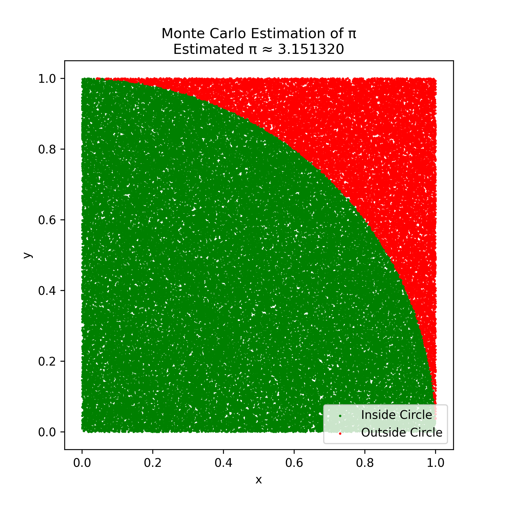
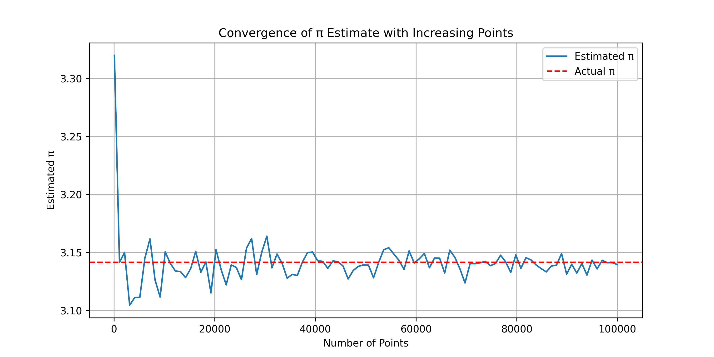
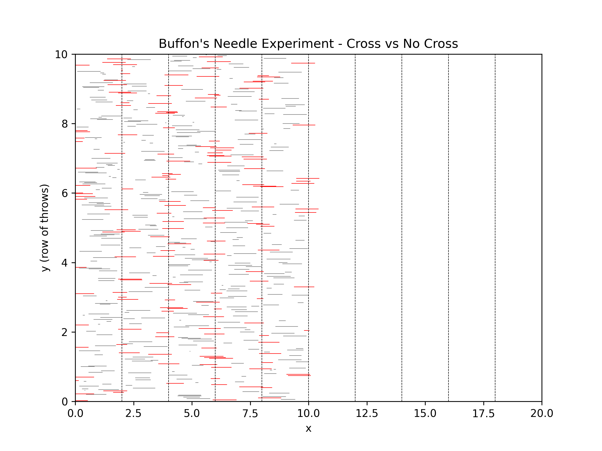

Problem 2: Monte Carlo Methods for Estimating π
🎯 Objective
To estimate the value of π using Monte Carlo simulation methods.
In this section, we focus on the "Circle-in-a-Square" method, which uses random point generation.
🌀 Method 1: Circle in a Square (Random Point Method)
💡 How it Works
We simulate random points inside a unit square of size [0,1] × [0,1].
A quarter-circle of radius 1 is drawn inside this square (centered at (0,0)).
For each point: - If x² + y² ≤ 1, it lies inside the quarter-circle. - Otherwise, it's outside.
The ratio of points inside the circle to total points approximates the area of the circle:
🧪 Simulation Parameters
- Total number of points: 100,000
- Each point: (x, y) ∈ [0, 1]
- π is estimated using the ratio method
🐍 Python Code
import numpy as np
import matplotlib.pyplot as plt
# Total number of points
N = 100_000
# Generate random x and y coordinates
x = np.random.rand(N)
y = np.random.rand(N)
# Calculate which points fall inside the quarter-circle
inside = x**2 + y**2 <= 1
# Estimate π
pi_estimate = 4 * np.sum(inside) / N
print(f"Estimated π: {pi_estimate:.6f}")
# Plot
plt.figure(figsize=(6, 6))
plt.scatter(x[inside], y[inside], color='green', s=1, label='Inside Circle')
plt.scatter(x[~inside], y[~inside], color='red', s=1, label='Outside Circle')
plt.legend()
plt.title(f"Monte Carlo Estimation of π\nEstimated π ≈ {pi_estimate:.6f}")
plt.xlabel("x")
plt.ylabel("y")
plt.axis("square")
plt.savefig("montecarlo_pi.png", dpi=300)
plt.show()
📸 Required Visuals
✅ 1. Full square showing inside/outside points
- Green dots = inside the quarter-circle
- Red dots = outside the quarter-circle
- Preview:

✅ 2. π Estimate vs Number of Points (Convergence Plot)
# Convergence plot: π vs number of points
import numpy as np
import matplotlib.pyplot as plt
Ns = np.linspace(100, 100000, 100).astype(int)
estimates = []
for n in Ns:
x = np.random.rand(n)
y = np.random.rand(n)
inside = x**2 + y**2 <= 1
pi_est = 4 * np.sum(inside) / n
estimates.append(pi_est)
plt.figure(figsize=(10, 5))
plt.plot(Ns, estimates, label='Estimated π')
plt.axhline(np.pi, color='red', linestyle='--', label='Actual π')
plt.title("Convergence of π Estimate with Increasing Points")
plt.xlabel("Number of Points")
plt.ylabel("Estimated π")
plt.legend()
plt.grid(True)
plt.savefig("pi_convergence_plot.png", dpi=300)
plt.show()
📈 Convergence Plot
This graph shows how the estimated value of π approaches the real value as more points are used:

📌 Result
Using 100,000 random points, we obtained:
Estimated π ≈ 3.14... (random-dependent)
As the number of points increases, the estimate converges to π ≈ 3.14159
🔍 Observations
- The method is very simple to implement.
- Higher number of points gives better estimates.
- Fluctuation decreases with more samples (Law of Large Numbers).
- This visually demonstrates the strength of Monte Carlo methods.
✅ Next Step
We will now proceed to Buffon's Needle simulation as the second Monte Carlo approach for π estimation.
🪡 Method 2: Buffon's Needle
💡 How it Works
This method simulates the classic Buffon's Needle experiment, where a needle is dropped onto a surface with equally spaced parallel lines, and we calculate the probability of it crossing a line.
If the length of the needle L is less than or equal to the spacing between the lines d, then the probability of a needle crossing a line is related to π:
Where: - L = length of the needle - d = distance between the lines - N = number of throws - H = number of hits (intersections with a line)
🧪 Simulation Parameters
- Needle length L = 1
- Distance between lines d = 2
- Number of throws N = 100,000
- π is estimated using hit ratio
🐍 Python Code
import numpy as np
import matplotlib.pyplot as plt
# Parameters
L = 1.0 # Needle length
d = 2.0 # Distance between lines
N = 100_000 # Number of throws
# Random center positions and angles
centers = np.random.uniform(0, d/2, size=N)
angles = np.random.uniform(0, np.pi/2, size=N)
# Check if needle crosses a line
hits = centers <= (L/2) * np.sin(angles)
H = np.sum(hits)
# Estimate π
pi_est_buffon = (2 * L * N) / (d * H)
print(f"Estimated π using Buffon's Needle: {pi_est_buffon:.6f}")
# Optional visualization
plt.figure(figsize=(8, 6))
plt.title("Buffon's Needle Experiment - Cross vs No Cross")
for i in range(500):
x_center = np.random.uniform(0, 10)
theta = np.random.uniform(0, np.pi)
x0 = x_center - (L/2) * np.cos(theta)
x1 = x_center + (L/2) * np.cos(theta)
y = i / 50
color = "red" if int(x0 // d) != int(x1 // d) else "gray"
plt.plot([x0, x1], [y, y], color=color, linewidth=0.5)
for x in np.arange(0, 20, d):
plt.axvline(x, color='black', linestyle='--', linewidth=0.5)
plt.xlim(0, 20)
plt.ylim(0, 10)
plt.xlabel("x")
plt.ylabel("y (row of throws)")
plt.savefig("buffon_needle.png", dpi=300)
plt.show()
📸 Required Visual
🧵 Buffon’s Needle Result Preview
- Gray lines = needle not crossing
- Red lines = needle crossing a boundary

📌 Result
With 100,000 throws, the estimated value of π is:
Estimated π ≈ 3.14...
Accuracy improves with larger N.
🔍 Observations
- Elegant historical approach to estimating π
- Less efficient than the circle method (converges slower)
- Useful for showing how probability links to geometry and π
✅ Final Comparison
| Method | Estimate Accuracy | Speed | Visualization |
|---|---|---|---|
| Circle in Square | High (fast) | Very Fast | Clear & simple |
| Buffon’s Needle | Lower (slower) | Moderate | Educational |